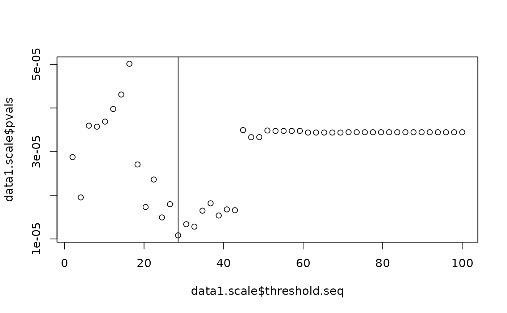

Quantifying the importance of scale
scale_importance.RdIdentify which distance is most important in characterizing an association between the topological structure in each image and outcomes.
Usage
scale_importance(
pd.list,
y,
X = NULL,
cens = NULL,
omega.list,
threshold,
PIDs,
outcome.type = "continuous",
n.thresh = 50,
print.progress = FALSE
)Arguments
- pd.list
List of persistence diagrams
- y
Outcome vector
- X
Covariates to adjust for, if desired. May be left NULL.
- cens
Censoring vector for survival outcomes. May be left NULL.
- omega.list
Vector of weights to combine kernel matrices
- threshold
Maximum radius for Rips filtration
- PIDs
Vector of patient IDs
- outcome.type
Outcome type, options include "continuous", "binary", or "survival"
- n.thresh
Number of distances between cells to evaluate. Default is 50
- print.progress
Boolean, should progress be printed throughout analysis?
Value
Returns a list with the following elements:
- min.thresh
The distance value at which the lowest TopKAT p-value was obtained
- pvals
The vector of TopKAT p-values for each radius value
- threshold.seq
The vector of distances considered
Details
This function identifies the distance at which the features which have been born and died during the process of filtration are most associated with the outcome.
Examples
# Generate a persistence diagram based on a Rips filtration for each image
pd.list <- generate_rips(data1.df, 100)
#> [1] "Rips diagram: 1"
#> [1] "Rips diagram: 2"
#> [1] "Rips diagram: 3"
#> [1] "Rips diagram: 4"
#> [1] "Rips diagram: 5"
#> [1] "Rips diagram: 6"
#> [1] "Rips diagram: 7"
#> [1] "Rips diagram: 8"
#> [1] "Rips diagram: 9"
#> [1] "Rips diagram: 10"
#> [1] "Rips diagram: 11"
#> [1] "Rips diagram: 12"
#> [1] "Rips diagram: 13"
#> [1] "Rips diagram: 14"
#> [1] "Rips diagram: 15"
#> [1] "Rips diagram: 16"
#> [1] "Rips diagram: 17"
#> [1] "Rips diagram: 18"
#> [1] "Rips diagram: 19"
#> [1] "Rips diagram: 20"
#> [1] "Rips diagram: 21"
#> [1] "Rips diagram: 22"
#> [1] "Rips diagram: 23"
#> [1] "Rips diagram: 24"
#> [1] "Rips diagram: 25"
#> [1] "Rips diagram: 26"
#> [1] "Rips diagram: 27"
#> [1] "Rips diagram: 28"
#> [1] "Rips diagram: 29"
#> [1] "Rips diagram: 30"
#> [1] "Rips diagram: 31"
#> [1] "Rips diagram: 32"
#> [1] "Rips diagram: 33"
#> [1] "Rips diagram: 34"
#> [1] "Rips diagram: 35"
#> [1] "Rips diagram: 36"
#> [1] "Rips diagram: 37"
#> [1] "Rips diagram: 38"
#> [1] "Rips diagram: 39"
#> [1] "Rips diagram: 40"
#> [1] "Rips diagram: 41"
#> [1] "Rips diagram: 42"
#> [1] "Rips diagram: 43"
#> [1] "Rips diagram: 44"
#> [1] "Rips diagram: 45"
#> [1] "Rips diagram: 46"
#> [1] "Rips diagram: 47"
#> [1] "Rips diagram: 48"
#> [1] "Rips diagram: 49"
#> [1] "Rips diagram: 50"
#> [1] "Rips diagram: 51"
#> [1] "Rips diagram: 52"
#> [1] "Rips diagram: 53"
#> [1] "Rips diagram: 54"
#> [1] "Rips diagram: 55"
#> [1] "Rips diagram: 56"
#> [1] "Rips diagram: 57"
#> [1] "Rips diagram: 58"
#> [1] "Rips diagram: 59"
#> [1] "Rips diagram: 60"
#> [1] "Rips diagram: 61"
#> [1] "Rips diagram: 62"
#> [1] "Rips diagram: 63"
#> [1] "Rips diagram: 64"
#> [1] "Rips diagram: 65"
#> [1] "Rips diagram: 66"
#> [1] "Rips diagram: 67"
#> [1] "Rips diagram: 68"
#> [1] "Rips diagram: 69"
#> [1] "Rips diagram: 70"
#> [1] "Rips diagram: 71"
#> [1] "Rips diagram: 72"
#> [1] "Rips diagram: 73"
#> [1] "Rips diagram: 74"
#> [1] "Rips diagram: 75"
#> [1] "Rips diagram: 76"
#> [1] "Rips diagram: 77"
#> [1] "Rips diagram: 78"
#> [1] "Rips diagram: 79"
#> [1] "Rips diagram: 80"
#> [1] "Rips diagram: 81"
#> [1] "Rips diagram: 82"
#> [1] "Rips diagram: 83"
#> [1] "Rips diagram: 84"
#> [1] "Rips diagram: 85"
#> [1] "Rips diagram: 86"
#> [1] "Rips diagram: 87"
#> [1] "Rips diagram: 88"
#> [1] "Rips diagram: 89"
#> [1] "Rips diagram: 90"
#> [1] "Rips diagram: 91"
#> [1] "Rips diagram: 92"
#> [1] "Rips diagram: 93"
#> [1] "Rips diagram: 94"
#> [1] "Rips diagram: 95"
#> [1] "Rips diagram: 96"
#> [1] "Rips diagram: 97"
#> [1] "Rips diagram: 98"
#> [1] "Rips diagram: 99"
#> [1] "Rips diagram: 100"
# Run the scale importance analysis
data1.scale <- scale_importance(pd.list = pd.list,
y = y,
cens = cens,
omega.list = c(0, 0.5, 1),
threshold = 100,
PIDs = 1:100,
outcome.type = "survival")
# Plot the results
plot(data1.scale$threshold.seq, data1.scale$pvals); abline(v = data1.scale$min.thresh)
